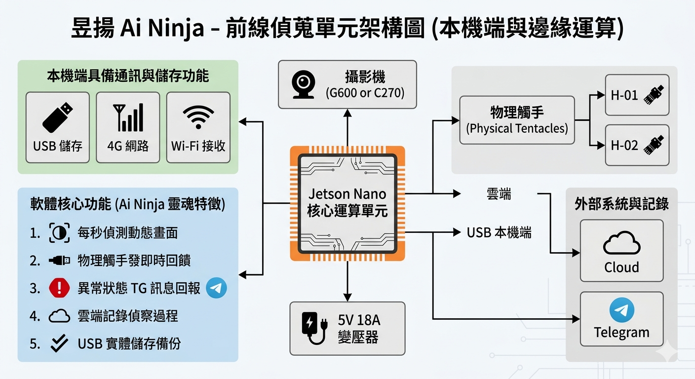
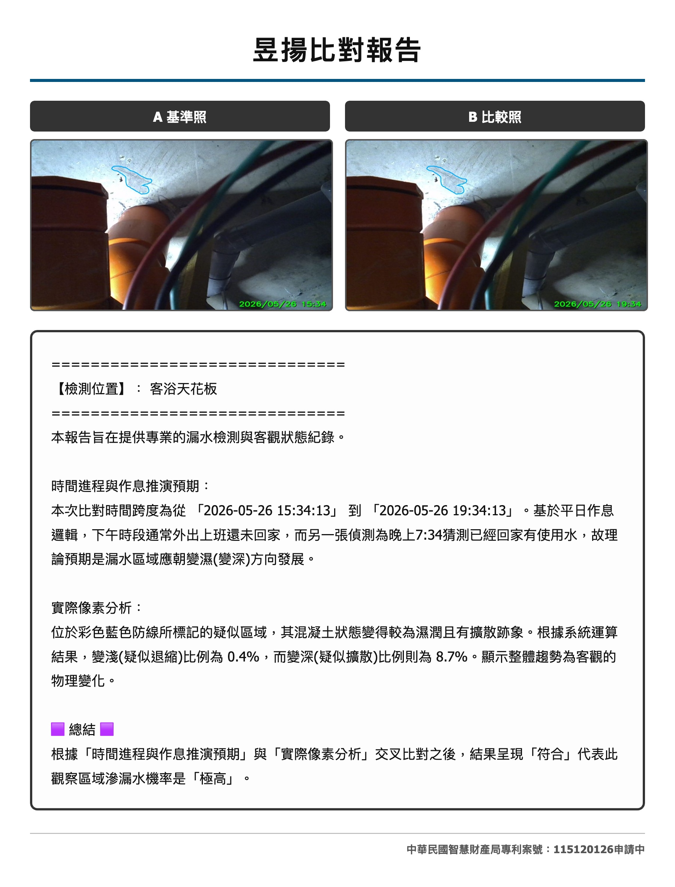

陳太太的浴室天花板常在半夜滴水，但師傅白天趕來時卻總是乾的。為此師傅連跑了四趟，總算幸運瞥見天花板角落有一小塊「疑似」變深的濕潤區。
他趕緊找樓上鄰居協調。沒想到樓上住戶看著那若有似無的水痕：「現在我的浴室是乾的，這哪能證明是我家漏的？」
師傅當場語塞。現場沒有持續的影像紀錄，也沒有客觀數據佐證。師傅白花了幾天工，卻因為拿不出「可靠」的科學鐵證，讓漏水糾紛無奈陷入了各說各話的死胡同。
傳統抓漏靠的是「經驗」與「肉眼」，但水分的蔓延往往無聲無息。昱揚 Ai Ninja 智能動態系統，利用像素運算與先進 AI 視覺大模型帶入工程現場。我們不靠瞎猜，我們只讓數據說出無可辯駁的真相。
漏水往往是瞬間，而滲水卻是慢到肉眼難以分辨。昱揚派忍者進駐艱困區域，提供全天候的高畫質監控。
每秒24幀偵測動態監測與捕捉10秒錄影，完整復原案發現場。
提取不同時間相片進行像素比對，科學數據判斷深淺變化。
這就是系統在黑暗中默默守護的成果。無聲無息的間歇性漏水，也逃不過 24 小時動態天眼的捕捉。
A： 一般監視器是 24 小時無腦盲錄，若要尋找漏水點，您得花大把時間快轉回放，還未必能用肉眼看出些微的擴散變化。Ai 忍者搭載了先進的「邊緣運算」大腦，它不做浪費資源的全時錄影，而是專注於「異常捕捉」。只有在系統辨識到漏水防線的像素發生變化時，才會瞬間觸發鎖定並發送警報，精準揪出稍縱即逝的漏水瞬間。
A： 傳統師傅到場拍照，只能記錄下「當下那一瞬間」的狀況，且每次拍攝的距離、角度與光線都不同，根本無法進行科學比對。Ai 忍者採用嚴格的「固定地點、固定角度」架設，結合一天中不同時間區段（如白天無人與深夜洗澡時段）的影像，交由雲端進行像素級的明暗交叉分析。這種做法徹底排除了人為視覺誤差，大幅提升判斷的獨立性與精準度，讓科學數字還原真相。
A： 其實換算下來，反而為您省下更多！傳統抓漏若遇到「間歇性漏水」，您可能需要請師傅反覆跑好幾趟現場。這不僅衍生出可觀的人工車馬費，您還得多次請假配合開門，既折騰又未必抓得到源頭。Ai 忍者只需一次架設，就能為您提供 24 小時不間斷的智能觀測，用高效的科技取代昂貴且低效的人工盲測，為您省下最寶貴的「時間成本」與「溝通心力」。
A： 請您絕對放心！您可以把 Ai 忍者想像成一位「視力極佳，但天生耳聾」的專業守衛。為了保障業主隱私，我們的設備在硬體物理設計上完全沒有安裝任何麥克風或收音零件，在軟體底層的編碼中，也徹底移除了聲音傳輸的程式碼。Ai 忍者只對牆壁與天花板的「水痕像素」感興趣，也絕對不會在物理上聽見您環境中的任何聲音或是對話。

獨家專利佈局
中華民國智慧財產局專利案號：115120126 (審查程序中)。
科學鑑識結果。沒有模糊的猜想，只有像素級的精準數據與作息邏輯的交叉比對。
